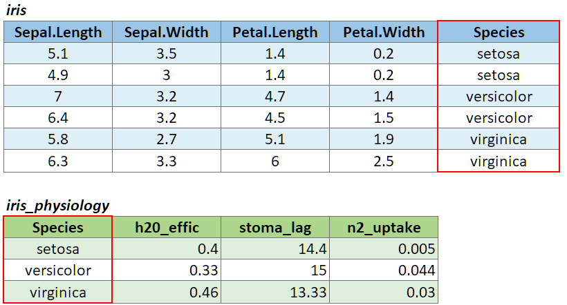

Spatial Data Analysis
with R
BayGeo, Spring
2023
Data Wrangling 
Data Wrangling

Whatever is needed to get your data frame ready
for the function(s) you want to use for analysis and visualization.

AKA data munging, manipulation, transformation, etc.
Often includes one or more of:


dplyr
An alternative (usually better) way to wrangle data frames than base R.
Part of the tidyverse.
Best way to familiarize yourself - explore the cheat sheet:

R Notebooks are written in “R Markdown”, which combines text and R code.
.png)
.png)
.png)
.png)
.png)
.png)
.png)
.png)
.png)


Exercises 5 will be R Notebook!
We’ll be looking at the Palmer Penguins dataset.
Exercise 5 Topics


To join two data frames based on a common field, you can use:
left_join(x, y, by)
where x and y are data frames, and by is the name of a column they have in common.
If there is only one column in common, and if it has the same name in both data frames, you can omit the by argument.
If the common column is named differently in the two data frames, you can deal with that by passing a named vector as the by argument. See below.
To illustrate a table join, we’ll first import a csv with some fake data about the genetics of different iris species:
# Create a data frame with additional info about the three IRIS species
iris_genetics <- data.frame(Species=c("setosa", "versicolor", "virginica"),
num_genes = c(42000, 41000, 43000),
prp_alles_recessive = c(0.8, 0.76, 0.65))
iris_genetics## Species num_genes prp_alles_recessive
## 1 setosa 42000 0.80
## 2 versicolor 41000 0.76
## 3 virginica 43000 0.65We can join these additional columns to the iris data frame with
left_join():
iris %>%
left_join(iris_genetics, by = "Species") %>%
slice(1:10)## Sepal.Length Sepal.Width Petal.Length Petal.Width Species num_genes prp_alles_recessive
## 1 5.1 3.5 1.4 0.2 setosa 42000 0.8
## 2 4.9 3.0 1.4 0.2 setosa 42000 0.8
## 3 4.7 3.2 1.3 0.2 setosa 42000 0.8
## 4 4.6 3.1 1.5 0.2 setosa 42000 0.8
## 5 5.0 3.6 1.4 0.2 setosa 42000 0.8
## 6 5.4 3.9 1.7 0.4 setosa 42000 0.8
## 7 4.6 3.4 1.4 0.3 setosa 42000 0.8
## 8 5.0 3.4 1.5 0.2 setosa 42000 0.8
## 9 4.4 2.9 1.4 0.2 setosa 42000 0.8
## 10 4.9 3.1 1.5 0.1 setosa 42000 0.8
If you need to join tables on multiple columns, add additional column
names to the by argument.
Join columns must be the same data type (i.e., both numeric or both character).
There are several variants of left_join(), the most
common being right_join() and
inner_join(). See help for details.
If the join column is named differently in the two tables, you can
pass a named character vector as the by argument. A named
vector is a vector whose elements have been assigned names. You can
construct a named vector with c().

For example if the join column was named ‘SpeciesName’ in x, and just ‘Species’ in y, your expression would be:
left_join(x, y, by = c("SpeciesName" = "Species"))

Reshaping data includes:
The go-to Tidyverse package for reshaping data frames is tidyr

The two most common tidyr functions:
pivot_longer()

pivot_wider()